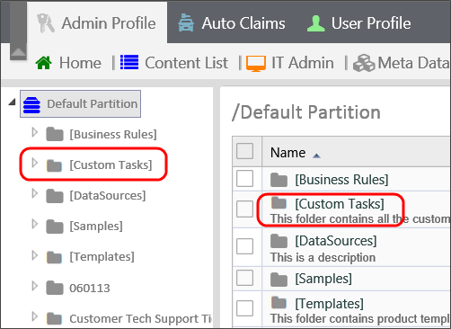
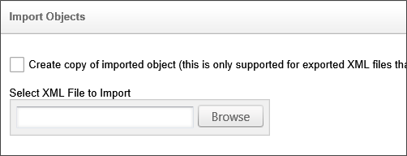

|
|
Lesson Contents | In this Lesson, you will learn an overview of the various Custom Tasks available in Process Director. |
Process Director supports the ability to package unique business logic in Custom Tasks that can be mapped to Form events (e.g. buttons) and can be used in processes as steps. This allows custom logic to be developed once, and re-used across many Form definitions and process definitions without any additional scripting. Process Director comes with a set of standard custom tasks created by BP Logix, and which can be run in a Form, Process, or Business Rule.
Form Custom Tasks are mapped to Form events. For example, Custom Tasks can be set to respond to a change in Form data, or to modify any of the current form data.
A Process Custom Task can be added to a Process Timeline just like any other built-in activity type. The Process Custom Task cannot have any user participants; instead, the Custom Task runs as a Timeline Activity, and then immediately transitions to the next task in the process, without any user intervention.
A Business Rule Custom Task can be added to a business rule definition as part of a condition to be evaluated. A business rule can only have one custom task and can return as the following: string, number, date, user, and group.
The Custom Tasks that come with process Director are under continuous Development by BP Logix, with new versions updated periodically for import into your Process Director installation. Usually, the Custom Tasks are imported into the [Custom Tasks] folder located in the root folder of the partition.
Custom Tasks are divided into several categories in Process Director. In this lesson, we'll present an overview of the custom tasks. Later in this course, we will take a look at some important Custom Tasks in detail.
The Content Actions Custom Tasks enable you to manipulate different objects in the Process Director Content list.
Attach Document: This custom task will attach a document from the content list to a specific Form or Process instance.
Export Files to Filesystem: This Custom Task allows a user to export Objects from Process Director to outside file systems.
Export Items: This custom task exports items (Documents, Forms, Form Data, etc.) to the Content List or File System. The Items can be exported in either XML or CSV Format.
Import files from Filesystem: This Custom Task allows a user to import objects from outside file systems to Process Director.
Item Actions: This Custom Task allows you to move, delete, or rename an item from within a process.
Run Report: The Custom Task enables you to export a Report to a specific file format (PDF, PNG, etc.).
Custom tasks in this section perform operations on a live database to Select, Update, Insert, or Delete data. Any operation you specify with these custom tasks will run on the database you select. As such, you should exercise caution using custom tasks that alter the underlying data.
Advanced Fill Dropdown from DB: This Custom Form Task will automatically fill a dropdown field on the Form with values from an external database using a free-form SQL command.
Advanced Fill Fields from DB: This Custom Form Task will automatically fill a field or fields on the Form with values from an external database using a free-form SQL command.
Fill DropDown from DB: This custom task allows you to fill a dropdown in a Form with data from a database without having to use SQL.
Fill Fields from DB: This Custom Form Task will automatically fill a field or fields on the Form with values from an external database without using SQL.
SQL Command: This Custom Task will execute a custom SQL command on an external database. This is a very advanced custom task that allows your Form, or Process Timeline to submit any kind of SQL command to a database.
These custom tasks enable you to perform a variety of tasks on documents stored in Process Director.
Fill Fields from Excel: This custom task allows you to fill in form fields from data in an Excel sheet. This Excel sheet can exist either as an object in the Content List, or as a reference attached to the Process Timeline, or Form associated with this custom task.
Transform Form to Word: This custom task allows you to transform a form instance into a Microsoft Word document. You can specify how data from the form instance is mapped to the Word document by describing how each field in the form instance maps to each field in the Word document, and you can have all fields in the form instance map to fields with the same names in the Word document.
These custom tasks perform various Form operations.
Get Geolocation: This Custom Task allows a user to fill Form fields with location (latitude/longitude) data taken from the web browser.
Show Alert: This custom task will show a JavaScript alert on a Form.
Validate Form: This Custom Task allows a user to run Form validation before attempting to submit the Form.
Validate Form Field: This Custom Task will allow you to validate a form field using a regular expression.
Add Javascript to Form: This Custom Task will allow you to add JavaScript to run a client-side script in the Form.
These custom task enable you to copy data from, or set data values in, a Form.
Copy Form Data: This custom task enables you to copy data from one Form to an instance of another.
Set Form Data: This Custom Task will set the value of a control or controls on a Form.
These custom tasks enable you to manipulate Meta Data from Process Director.
Copy Meta Data: This custom task allows you to copy meta data from one object to another.
Set Meta Data: This Custom Task assigns Categories and sets Attributes on a set of objects.
PROCESS
These custom tasks are used to initiate processes or process steps.
E-mail Action: This Custom task will parse an email and extract values to use in a Form or process.
Post: This Custom Task will post a value to a Wait task in a process to complete the Wait task and wake the process.
Run Process: This custom task allows you to launch a new process. You can either specify the process within the custom task configuration, or have the process specified by a form field or an array of form fields.
Schedule Process: This Custom Task extracts information from a Form to start processes at specific instances as defined in a Form. The Custom task depends on the Scheduler module.
These custom tasks enable Process Director to integrate with Facebook and Twitter to manage social media data and posting.
Fill Fields from Facebook: This Custom Task allows a user to fill Form data from a Facebook Data Source.
Fill Fields from Twitter: This Custom Tasks allows users to fill Fields in Array rows with data from a Twitter account.
Post to Facebook: This Custom Task will create Facebook Posts and Comments on a user's behalf.
Send Tweet: This Custom Task allows users to Tweet with data from a Form.
These custom tasks extract data from web services to perform Form operations, such as filling out Form data.
Fill DropDown from Web Service: This Custom Form Task will automatically fill a dropdown field on the Form with results from a web service call.
Fill Fields from REST: This Custom Form Task can fill multiple fields on a Form with values from a REST Web Service call.
Fill Fields from Web Service: This Custom Form Task will make a Web Service Call, sending data from the running form as inputs to the method.
Custom Tasks may be periodically updated. To ensure proper installation and upgrade of these custom tasks review the following procedures:
Do not delete the current Custom Tasks unless you are sure you want to delete them. Deleting custom tasks will remove all custom task event mappings to any objects in the partition.
To import custom tasks ensure that you are not inside of the Custom Tasks folder unless you are importing individual custom tasks.
Navigate to the root folder of the location where the Custom Tasks are stored. This should be the root folder of the partition. It should look like the following:

Continue to import the custom tasks by selecting Import Objects from the Create New dropdown. Selecting this option will open the Import Objects dialog box. Browse to the location of the XML file by clicking the Browse button to open the file dialog that enables you to select the XML file in your local file system.

Once you have selected the XML file to import click OK. This will import and overwrite the current Custom Tasks, kin their current location.
Ensure that there are no duplicate [Custom Tasks] folders.
You have successfully updated your custom tasks.